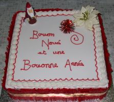

Trenton,
Lé 25 dé dézembre, 1982.
Michigan, USA,
 Est-ch' vrainment Noué aniet? I' faut bein l'craithe, car lé calendri m'dit qu' aniet est l'25 dé dézembre, jour mîns à part pour célébrer l'annivèrsaithe dé la naîssance dé Nouotre Seigneur Jésû Chri. Pour mé, lé jour n'est pon bein jouoyeux comme jour dé fête car j'pense trop à l'absence dé man chièr fréthe Fraînque, décédé dreinement.
En reunminnant, j'pense ès jours dé Noué d'ma jannèche et ès bouans vièrs temps quand Manman griyait la mangeaille dé Noué, et qué l's oncl'yes et tantes v'naient nouos aîdgi à la mangi.
"Av'-ious d'difféthents r'pas dans chu temps-là?", ou mé d'mandez.
Eh bein, en général nou peut dithe qué l'mangi n'etait pon hardi difféthent, mais cèrtaines choses tchi s'mangent à ch' t heu n'étaient pon connues dans chu temps-là, mais l'pliaîsi d'célébrer la fête en fanmil'ye n'a pon changi. Ch'tait p't-êt' un p'tit pus agriabl'ye dans l'temps (j'pâle des années 1895 à disons 1900) - viyant qué l'transport 'tait mains c'mode nou l'appréciait pus. Ch'tait eune affaithe du j'va et l'quèrre ou la vainne, et y'avait du temps pèrdu en c'mîn.
La grand' difféthence 'tait qué la pliûpart du fricot v'nait du saleux et du gardîn potagi ou du clios à côté, à la pliaiche dé la boutique. Lé grand r'pas (le dînner) du jour s'faîsait pûtôt atout eune rouelle dé boeu ou du lard au fou, lé quétot ayant 'té bigorgi la s'maine dé d'vant. Mais ch'tait pûtôt eune affaithe dé goût. Y'en avait tch'aimaient mus mangi des cotchets, un pithot, ou du cannard ou picot.
Comme lédgeunmes, y'avait des cârottes et sustout des pânnais. La pânnais Jèrriaise, r'nommée pour san bouan r'lais, 'tait crue en grand's quantités dans chu temps-là. Y'avait sans doute des patates étout et aut' sortes dé lédgeunmes, et tout tchi s'trouvait sus la tabl'ye 'tait frais et satisfaîsant.
 Eh bein, nouos v'chîn au podîn d'Noué. Lé podîn d'à ch't heu n'était pon connu dans les vièrs temps. Lé podîn d'Noué 'tait un podîn d'flieu et 'tait bouoilli. N'en v'chîn la r'chette s'ou-s-avez l'ambition d'en faithe iun pour gouôter tchiquechose du temps pâssé: -
Eh bein, nouos v'chîn au podîn d'Noué. Lé podîn d'à ch't heu n'était pon connu dans les vièrs temps. Lé podîn d'Noué 'tait un podîn d'flieu et 'tait bouoilli. N'en v'chîn la r'chette s'ou-s-avez l'ambition d'en faithe iun pour gouôter tchiquechose du temps pâssé: -
Deux tâssées d'flieu, eune tâssée d'mies d'pain, eune démié-livre d'gras d'viande mînchi tout p'tit (ou d'beurre), eune démié-livre d'chucre, quatre oeufs, du raisîn ou d'la corînthe et d'la muscade. Et pis mêler tout ensembl'ye et l'mett' dans eune podinniéthe bein graîssie et tchuithe à l'ieau un coupl'ye d'heuthes. Y'en avait tchi n'y m'ttaient pon d'pain, et d'autres y m'ttaient du lait. Lé podîn d'à ch't heu est difféthent, comme ou l'viyiz bein, et est d'originne Angliaîche.
Dans san vivant, ma m'mèe en faisait tréjous iun et y m'ttait deux d'goûts dg'ieau d'vie. Ch'en 'tait iun à la mode d'à ch't heu, sans doute. V'là tchi m'ramémouaithe qué man fréthe Fraînque, tch'était farceux et la bête au dgiabl'ye mais bouan comme du bouân pain, lî'êchangit les deux d'goûts dg'ieau d'vie qu' oulle avait mîns d'côté pour san podîn pour du thée fraid.
V'là tch'a à bein près la même couleu comme l'ieau d'vie et ou n's'en appèrchut pon d'vant tch'i' fûsse trop tard et l'thée 'tait dans l'podîn - tchi n'en 'tait pon d'piéthe. Il a pâssé bein des Noués d'pis chu temps-là. Ma pouôrre méthe mouothit en 1934 à l'âge dé souoxante-deux ans.
Mais pour èrvénîn à la mangeaille dé Noué du temps jadis. Pour lé r'pas du sé nou-s-avait d'la viande, du lard ou d'la volaille, mais fraid, chutte fais. Et l'houard ("brawn" en Anglîais) 'tait hardi aimé étout. Et tchiquefais des crétons. Auprès ch'là nou-s-avait du pâté d'pommes et des bourdélots. Et y'avait tréjous la fanmeuse gâche dé pâte, chutte gâche tch'est acouo ma favorite au jour d'aniet. Souvent, étout, y'avait des pommes au fou. I' n'y'avait pon d'chucrinnies, mais tréjous du fruit, toutes sortes d'pommes Jèrriaises et bein connues dans l'temps jadis, et dé ches paithes èmommées comme les paithes dé Chaûmonté et aut' sortes.
Et pis i' n'faut pon oublier les figues et les raisîns, les châtaines, les nouaix, les codrettes et l's almandes.
Quant à la bouaisson, y'en avait à gogo pour les cheins tch'en voulaient. Ch'tait eune affaithe dé goût. En général, i' m'sembl'ye qué l'cidre 'tait la bouaisson favorite. Il 'tait tout frais fait pour l'occâsion. I' y'avait tout pliein d'pommes pour en faithe dans chu temps-là.
La tchuithie dé toute chutte mangeaille sé faîsait duthant plusieurs jours dévant Noué, mais nou r'caûffait l'grand fou à l'exprès pour lé grand r'pas du jour dé Noué. Hélas! J'né r'vèrrai janmais ches bouâns vièrs temps!
Viyiz étout: